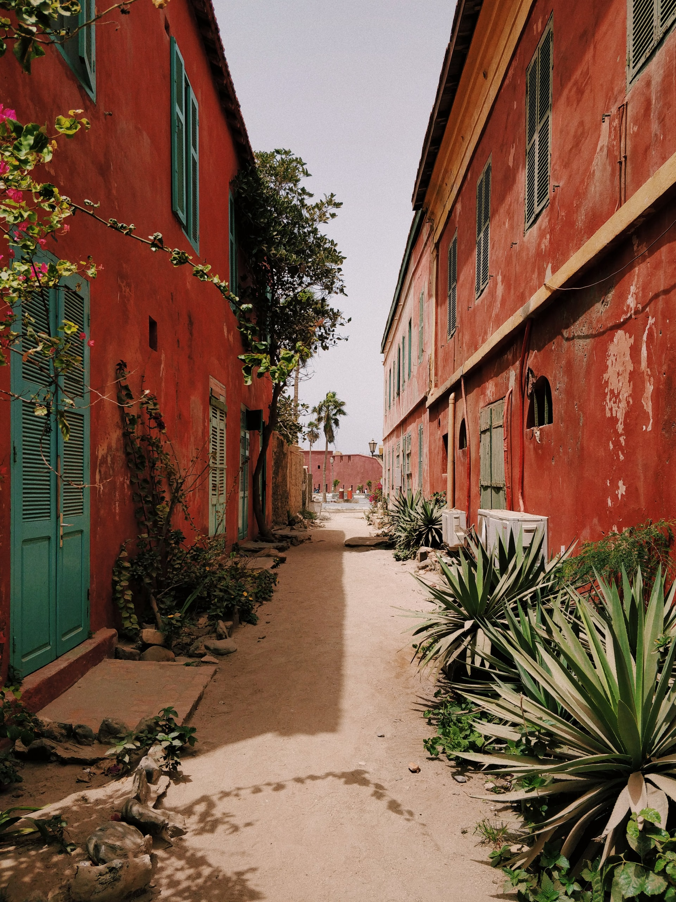
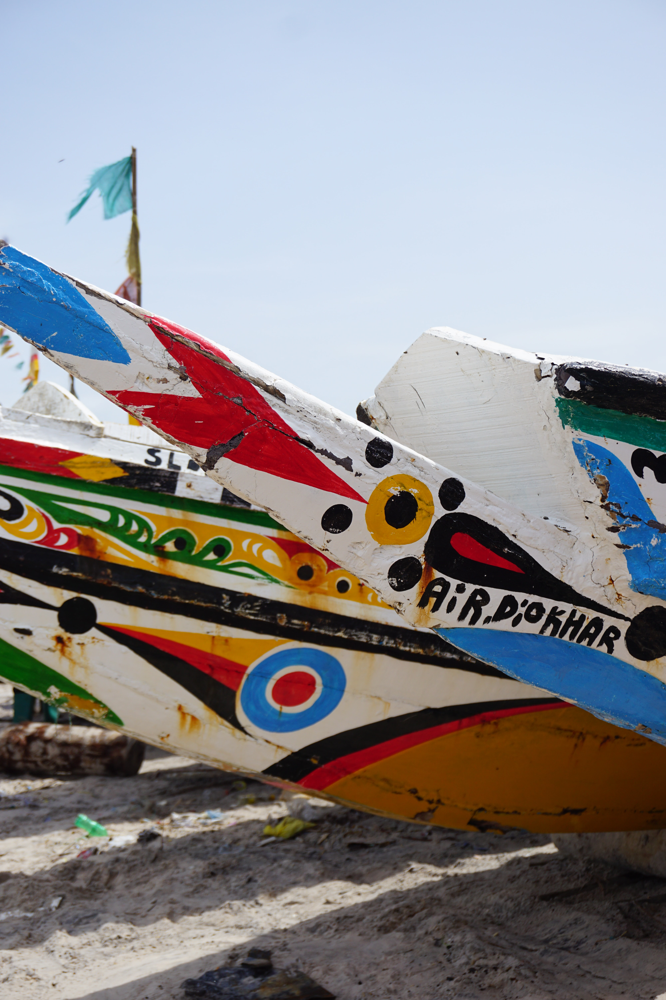
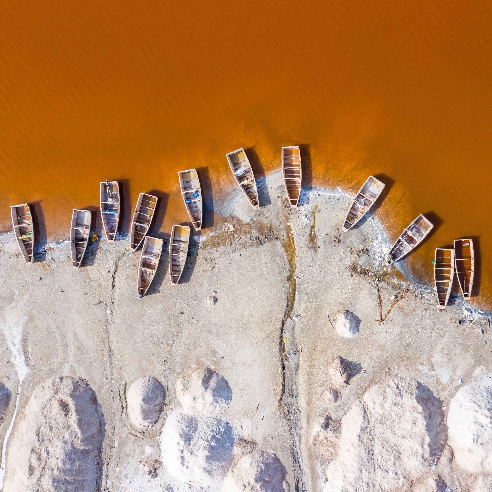

Nangadef
Nangadef (bonjour en wolof).
C’est l’un des premiers mots que vous entendez à peine arrivé au Sénégal. Bienvenue au Sénégal, un pays d’Afrique de l’Ouest où l’hospitalité prend tout son sens.
D’ailleurs, le pays est surnommé « le pays de la Terranga » (hospitalité en wolof) : le sourire, l’humain, l’accueil, nul doute que tout cela ne vous laissera pas indifférent. Chaque jour son lot de découverte et de dépaysement. j'ai traversez des villages de pêcheurs, des parcs naturels de toute beauté où la faune et la flore y sont exceptionnelles et préservées.
Voyager au Sénégal c’est aussi la garantie de la joie et douceur de vivre des belles régions du pays comme la Casamance ou Sine-Saloum. Ajoutez à cela bien d’autres pépites à découvrir comme le lac Rose, le désert de Lompoul, le parc national du Djoudj ou encore d’autres sites incontournables comme la ville de Saint-Louis et l’île de Gorée.
Sunugal
Le Sénégal est un pays qui a de belle choses à offir ou j'aime me ressourcer, le respect,l'hospitalité et la bonne humueur sont des valeurs communes aux Sénégalais.
On y mange bien, principalements des plats à base de riz et poisson, légumes, fruits de mer.. et le soleil est toujours au rendez vous,sa capitale est une ville dense, rythmé par les bruits des klaxons, des vendeurs ambulants et des causeries aux coins des rues autours d'un thé trés sucré.
Se qui peux être moins agréable et la dureté de la vie pour les locaux et l'insalubrité dans certains endroit de la capitale.
Je vous invite à vous y rendre les yeux fermer c'est un voyage qui ne vous laissera pas indifferent.
Histoires
Le Lac Retba, souvent appelé le Lac Rose pour sa couleur si particulière, est l'un des sites les plus visités de la presqu'île du Cap Vert au Sénégal.
Il possède des nuances allant du rose fuchsia au rouge pourpre selon la luminosité.
C'est le deuxième lac le plus salé du monde après la Mer Morte, c'est pour cela qu'on y flotte quand on s'y baigne.